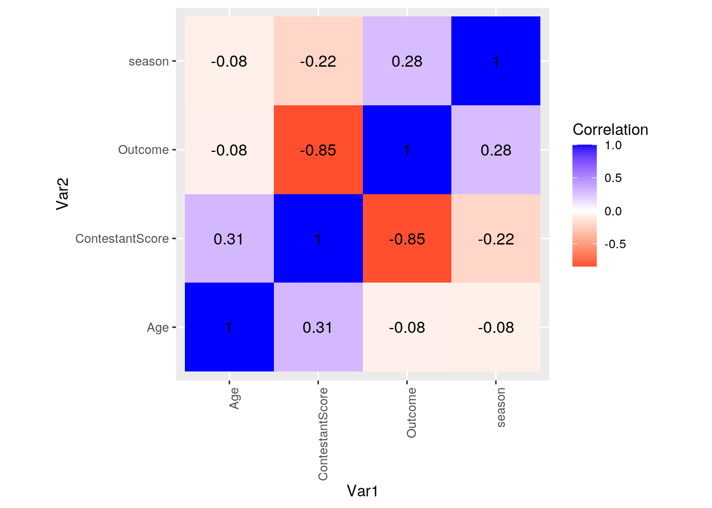
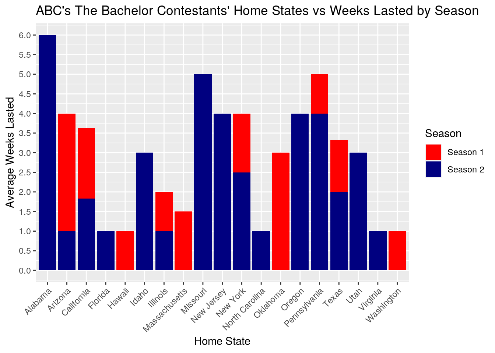
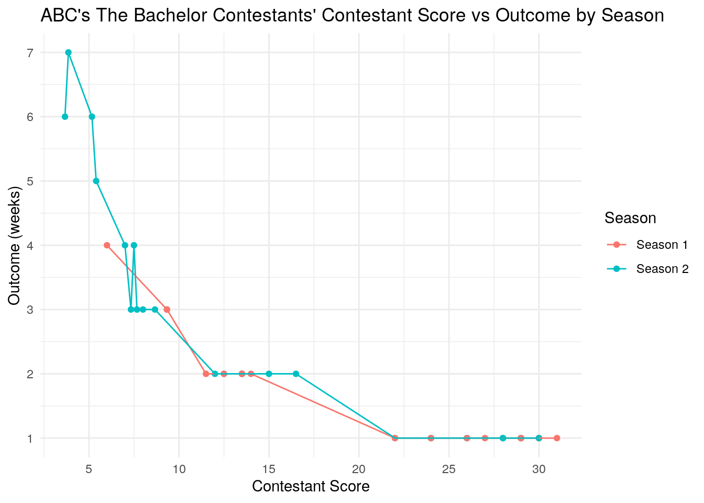
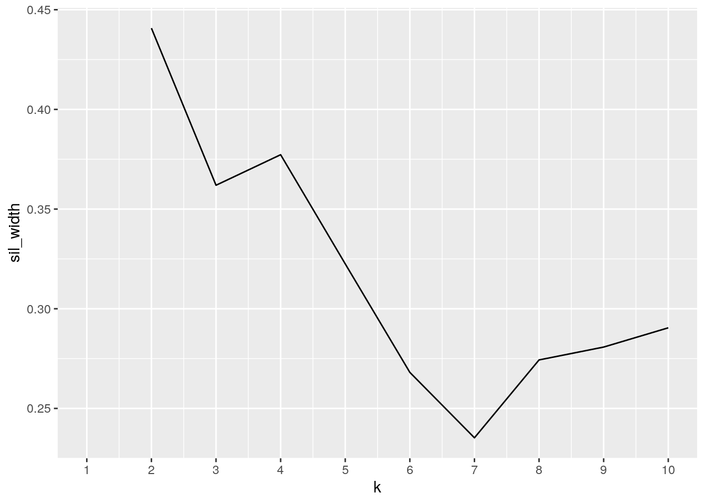
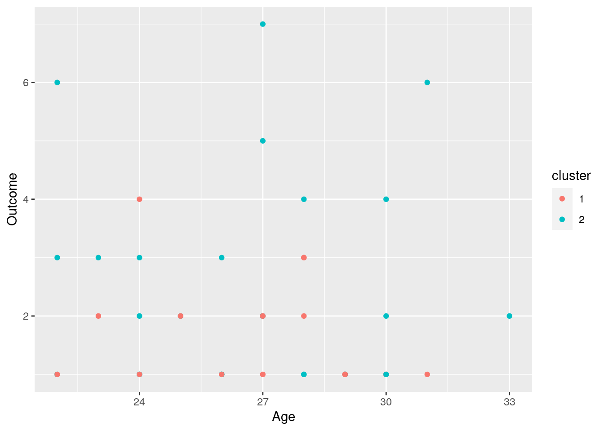
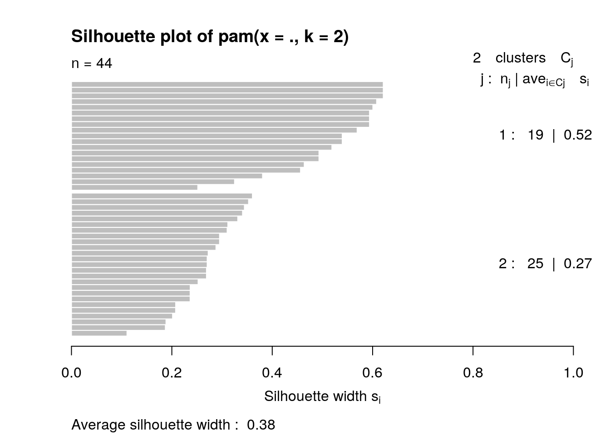

I chose two datasets containing information regarding ABC’s “The Bachelor” contestants. The variables they contain are age, name, state, weeks lasted, season, city, country, and outcome. I plan to use the variables name, state, outcome, season, and age (3 numeric). I acquired the datasets from a dataset platform called data.world. The demographics of these contestants can be intriguing and reveal interesting trends in who goes on reality dating shows like this and who is more likely to make it to end based on different variables.
Refer to summary statistics for ‘age’ variable under step 3 “Wrangling”. My data is already tidy so I demonstrated use of pivot_longer() and pivot_wider() on the summary statistics for the age variable instead.
library(dplyr)
library(tidyverse)
historical_bach <- read.csv("~/Project 1/historical bach.csv")
bachelor_contestants_for_data <- read.csv("~/Project 1/bachelor contestants for data (1).csv")
dataset1 <- historical_bach %>% filter(season == 1 | season ==
2) %>% select(name, season)
dataset2 <- bachelor_contestants_for_data %>% filter(Season ==
1 | Season == 2) %>% select(Name, Age, Outcome, State) #Selecting and filtering for variables needed for project.
merged <- dataset2 %>% full_join(dataset1, by = c(Name = "name")) %>%
na.omit() #Merging using full_join and getting rid of NAs
merged$Outcome <- as.numeric(as.character(merged$Outcome)) #Making 'outcome' variable numeric (# of weeks lasted).To merge my 2 datasets, I choise to do a full join. Before joining, I used the select() and filter() functions on both of my datasets so that they include only the variables I will be working with (Name, Age, State, Outcome, Season) and only information regarding seasons 1 and 2 (one of my datasets only contains info from these seasons). I chose the full join because it does not drop any data and I wanted to include all the data in my datasets that I filtered and selected for. No cases were dropped. My ID columns were different in capitalization–they were “Name” and “name” so I included by=c(“Name”=“name”). I also transformed the “Outcome” column to be numeric.
# Adding a column using mutate() to recode Outcome variable
# to a new categorical variable called 'Elimination Week'
# (numeric vector into character vector)
merged <- merged %>% mutate(Elimination_Week = recode(Outcome,
"Week 1", "Week 2", "Week 3", "Week 4", "Week 5", "Week 6",
"Week 7"))
# Adding a column using mutate() that represents 'Contestant
# Score' and is a function of contestant age and their
# outcome (# weeks lasted).
merged <- merged %>% mutate(ContestantScore = Age/Outcome)
# Using filter and summarize, I obtained the average weeks
# lasted for contestants based on age group. Contestants 23
# years old or less lasted longer in seasons 1 and 2 than
# other age groups, at 3.11 weeks on average, compared to
# contestants from ages 24 to 26 who lasted 2.07 weeks on
# average and contestants over 26 years old who lasted 2.33
# weeks on average.
merged %>% filter(Age <= 23) %>% summarize(avg_weekslasted = mean(Outcome))## avg_weekslasted
## 1 2.666667merged %>% filter(Age > 23, Age < 27) %>% summarize(avg_weekslasted = mean(Outcome))## avg_weekslasted
## 1 1.833333merged %>% filter(Age >= 27) %>% summarize(avg_weekslasted = mean(Outcome))## avg_weekslasted
## 1 2.230769# I grouped by season and summarized to get the number of
# distinct states that contestants from seasons 1 and 2 are
# from. There are 10 unique states for season 1 and 15 unique
# states for season 2.
merged %>% group_by(season) %>% summarize(n_distinct(State),
na.rm = F)## # A tibble: 2 x 3
## season `n_distinct(State)` na.rm
## <int> <int> <lgl>
## 1 1 10 FALSE
## 2 2 15 FALSE# I selected variables Outcome and Age and arranged Age in
# descending order to view the outcomes of the oldest
# bachelor contestants from seasons 1 and 2.
desc_age <- merged %>% select(Outcome, Age) %>% arrange(desc(Age))
head(desc_age)## Outcome Age
## 1 2 33
## 2 6 31
## 3 1 31
## 4 1 30
## 5 1 30
## 6 2 30# Calculating summary stats for Age
sum_stat_age <- merged %>% summarize(mean_age = mean(Age, na.rm = T),
sd_age = sd(Age, na.rm = T), var_age = var(Age, na.rm = T),
min_age = min(Age, na.rm = T), max_age = max(Age, na.rm = T),
median_age = median(Age, na.rm = T), distinct_ages = n_distinct(Age,
na.rm = T))
# Using pivot_longer to rearrange summary statistics for Age.
# I gave each summary statistic its own row and created a
# column for the value of each summary statistic.
tidy_project <- sum_stat_age %>% pivot_longer(1:7, names_to = "Summary_Statistic",
values_to = "Value")
head(tidy_project)## # A tibble: 6 x 2
## Summary_Statistic Value
## <chr> <dbl>
## 1 mean_age 26.8
## 2 sd_age 2.79
## 3 var_age 7.79
## 4 min_age 22
## 5 max_age 33
## 6 median_age 27# Returning summary statistics for Age back to regular view
# using pivot_wider.
tidy_project %>% pivot_wider(names_from = "Summary_Statistic",
values_from = "Value")## # A tibble: 1 x 7
## mean_age sd_age var_age min_age max_age median_age distinct_ages
## <dbl> <dbl> <dbl> <dbl> <dbl> <dbl> <dbl>
## 1 26.8 2.79 7.79 22 33 27 11# Calculating summary stats for Outcome
merged %>% summarize(mean_outcome = mean(Outcome, na.rm = T),
sd_outcome = sd(Outcome, na.rm = T), var_outcome = var(Outcome,
na.rm = T), min_outcome = min(Outcome, na.rm = T), max_outcome = max(Outcome,
na.rm = T), median_outcome = median(Outcome, na.rm = T),
distinct_outcomes = n_distinct(Outcome, na.rm = T))## mean_outcome sd_outcome var_outcome min_outcome max_outcome median_outcome
## 1 2.181818 1.544273 2.384778 1 7 2
## distinct_outcomes
## 1 7# Calculating summary stats for Season
merged %>% summarize(mean_season = mean(season, na.rm = F), sd_season = sd(season,
na.rm = T), var_season = var(season, na.rm = T), min_season = min(season,
na.rm = T), max_season = max(season, na.rm = T), median_season = median(season,
na.rm = F), distinct_seasons = n_distinct(season, na.rm = T))## mean_season sd_season var_season min_season max_season median_season
## 1 1.568182 0.501056 0.2510571 1 2 2
## distinct_seasons
## 1 2# Generating average ages of contestants and outcome based on
# home state (using summarize after group_by()). Because my 2
# categorical variables are Name and State, it would be
# pointless to also group by Name because that would just
# reveal the age and home state of each individual
# contestant, rather than provide any insight into trends
# based on home state (Name is essentially a unique
# identifier for each observation which is why I am not
# grouping by 2 categorical variables).
merged %>% group_by(State) %>% summarize(avgage = mean(Age, na.rm = T),
avgoutcome = mean(Outcome, na.rm = T))## # A tibble: 19 x 3
## State avgage avgoutcome
## <fct> <dbl> <dbl>
## 1 Alabama 22 6
## 2 Arizona 24.3 2.33
## 3 California 27.3 1.82
## 4 Florida 30 1
## 5 Hawaii 30 1
## 6 Idaho 23 3
## 7 Illinois 30 1
## 8 Massachusetts 23.5 1.5
## 9 Missouri 27 5
## 10 New Jersey 27.5 4
## 11 New York 27.5 2
## 12 North Carolina 26 1
## 13 Oklahoma 28 3
## 14 Oregon 28 4
## 15 Pennsylvania 26 3
## 16 Texas 27 1.67
## 17 Utah 22 3
## 18 Virginia 28 1
## 19 Washington 30 1# Revealing number of distinct contestants from each state
# (using summarize after group_by())
merged %>% group_by(State) %>% summarize(distinct_contestants = n_distinct(Name)) %>%
arrange(desc(distinct_contestants))## # A tibble: 19 x 2
## State distinct_contestants
## <fct> <int>
## 1 California 11
## 2 Texas 6
## 3 New York 4
## 4 Arizona 3
## 5 Pennsylvania 3
## 6 Illinois 2
## 7 Massachusetts 2
## 8 New Jersey 2
## 9 Alabama 1
## 10 Florida 1
## 11 Hawaii 1
## 12 Idaho 1
## 13 Missouri 1
## 14 North Carolina 1
## 15 Oklahoma 1
## 16 Oregon 1
## 17 Utah 1
## 18 Virginia 1
## 19 Washington 1First, I added a column using mutate() to recode the Outcome variable to a new categorical variable called “Elimination Week. Then I added a column using mutate() that represents”Contestant Score" and is a function of contestant age and their outcome (# weeks lasted). Using filter and summarize, I obtained the average weeks lasted for contestants based on age group. Contestants 23 years old or less lasted longer in seasons 1 and 2 than other age groups, at 2.667 weeks on average, compared to contestants from ages 24 to 26 who lasted 1.83 weeks on average and contestants over 26 years old who lasted 2.23 weeks on average. I grouped by season and summarized to get the number of distinct states that contestants from seasons 1 and 2 are from. There are 10 unique states for season 1 and 15 unique states for season 2. I selected variables Outcome and Age and arranged Age in descending order to view the outcomes of the oldest bachelor contestants from seasons 1 and 2 (needs more analysis to see a trend). I then calculated summary statistics for age, outcome and season. It was interesting that 26.8 years was the mean average age, as contestants on the bachelor are typically much younger than that in newer seasons. Next. I calculated average age and average outcome of contestants based on home state using group_by and summarize. Finally, I used group_by, summarize and arrange to discover the # of distinct contestants from each state. Most of the contestants from season 1 and 2 were from CA (11 of them) and TX (6 of them).
library(ggplot2)
# Selecting numeric variables and generating a correlation
# matrix (using only pairwise complete observations) and
# saving it as an object.
cormerged <- merged %>% select_if(is.numeric) %>% cor(use = "pair")
head(cormerged)## Age Outcome season ContestantScore
## Age 1.00000000 -0.07747841 -0.08123437 0.3079090
## Outcome -0.07747841 1.00000000 0.28415937 -0.8456802
## season -0.08123437 0.28415937 1.00000000 -0.2163390
## ContestantScore 0.30790905 -0.84568021 -0.21633897 1.0000000# Converting cormerged to a dataframe and making it tidy
# using pivot_longer().
tidycor <- cormerged %>% as.data.frame %>% rownames_to_column("Var1") %>%
pivot_longer(-1, names_to = "Var2", values_to = "Correlation")
head(tidycor)## # A tibble: 6 x 3
## Var1 Var2 Correlation
## <chr> <chr> <dbl>
## 1 Age Age 1
## 2 Age Outcome -0.0775
## 3 Age season -0.0812
## 4 Age ContestantScore 0.308
## 5 Outcome Age -0.0775
## 6 Outcome Outcome 1# Using ggplot to create a correlation heatmap, mapping Var1
# to the x-axis, Var2 to the y-axis and correlation to
# 'fill'.
tidycor %>% ggplot(aes(Var1, Var2, fill = Correlation)) + geom_tile() +
scale_fill_gradient2(low = "red", mid = "white", high = "blue") +
geom_text(aes(label = round(Correlation, 2)), color = "black",
size = 4) + theme(axis.text.x = element_text(angle = 90,
hjust = 1)) + coord_fixed()
# Here, I made season a categorical variable for better
# visualization in plots.
merged <- merged %>% mutate(Season.Char = recode(season, "Season 1",
"Season 2"))
# Here, I used ggplot to make a bar graph revealing the
# relationship between average weeks lasted and home state by
# season. I used stat=summary to calculate the average
# outcome (weeks lasted). I changed the default colors so
# that the graph is red and navy while also scaling the
# y-axis so that it goes from 0 to 7 by 0.5 increments
# (changed tick-marks). I re-titled axes, the graph as a
# whole and the legend and changed the theme so that the
# x-axis labels are slanted for a better visual.
ggplot(merged, aes(x = State, y = Outcome, fill = Season.Char)) +
geom_bar(stat = "summary", fun = mean, position = "stack") +
scale_fill_manual(values = c("Red", "Navy")) + scale_y_continuous(breaks = seq(0,
7, 0.5)) + theme(axis.text.x = element_text(angle = 45, hjust = 1)) +
ggtitle("ABC's The Bachelor Contestants' Home States vs Weeks Lasted by Season") +
ylab("Average Weeks Lasted") + xlab("Home State") + guides(fill = guide_legend(title = "Season"))
# Here, i used ggplot to make a graph revealing the
# relationship between Contestant Score (new variable I
# created using mutate) and Outcome by season. I changed the
# y-axis scale, retitled axes, legend and entire plot. I also
# changed the theme to minimal.
ggplot(merged, aes(x = ContestantScore, y = Outcome, color = Season.Char)) +
geom_point() + geom_line() + scale_x_continuous(breaks = seq(0,
40, 5)) + scale_y_continuous(breaks = seq(0, 7, 1)) + ggtitle("ABC's The Bachelor Contestants' Contestant Score vs Outcome by Season") +
ylab("Outcome (weeks)") + xlab("Contestant Score") + guides(color = guide_legend(title = "Season")) +
theme_minimal() First, I created a correlation heat map of my numeric variables, age, season, outcome and contestant score. The only notable correlations were between contestant score and age at a value of 0.37. The other variables were all weakly, negatively correlated with each other except for outcome and contestant score at a value of -0.85. Additionally, I created a bar plot to visualize the relationship between contestant home state and weeks lasted, also mapping by season. From this plot, it appears that contestants from Alabama, Florida and Kansas lasted the longest on average in seasons 1 and 2. This should be further investigated as small sample size may imply confounding variables or bias. Finally, to investigate the new variable “Contestant Score” as a predictor of outcome/weeks lasted on the show, I plotted the variable against the Outcome variable to visualize the relationship and mapped season by color. There is an obvious negative relationship between Outcome and Contestant Score.
library(cluster)
# Selecting for only numeric variables.
clust_bach <- merged %>% select(Age, season, Outcome) %>% na.omit()
# How many clusters (k) is best? I used the silhouette method
# to determine this.
pam_proj_sil <- merged %>% select(Age, Outcome, season) %>% na.omit()
sil_width <- vector()
for (i in 2:10) {
pam_fit <- pam(pam_proj_sil, k = i)
sil_width[i] <- pam_fit$silinfo$avg.width
}
# Generating silhouette plot to determine best number of
# clusters for data.
ggplot() + geom_line(aes(x = 1:10, y = sil_width)) + scale_x_continuous(name = "k",
breaks = 1:10)
# Scaling data and running cluster analysis (PAM).
pam_proj <- clust_bach %>% scale %>% pam(k = 2)
# Saving the cluster solution in my dataset.
pamclust_proj <- clust_bach %>% mutate(cluster = as.factor(pam_proj$clustering))
# Here, I am visualizing clusters
pamclust_proj %>% ggplot(aes(x = Age, y = Outcome, color = cluster)) +
geom_point()
# Here I am summarizing clusters--gives the means for each
# variable
pamclust_proj %>% group_by(cluster) %>% summarize_if(is.numeric,
mean, na.rm = T)## # A tibble: 2 x 4
## cluster Age season Outcome
## <fct> <dbl> <dbl> <dbl>
## 1 1 27.1 1 1.68
## 2 2 26.6 2 2.56# Here, I am determining the final medoids that are the most
# representative observations of their cluster.
merged %>% slice(pam_proj$id.med)## Name Age Outcome State season Elimination_Week ContestantScore
## 1 Tina 27 2 Texas 1 Week 2 13.5
## 2 Anindita 27 2 New York 2 Week 2 13.5
## Season.Char
## 1 Season 1
## 2 Season 2# Determining average silhouette width.
pam_proj$silinfo$avg.width## [1] 0.3756736# Determining average silhouette width per cluster to
# determine goodness-of-fit.
plot(pam_proj, which = 2) I decided to use PAM () for clustering my data, using k=2 for number of clusters based on the silhouette plot I generated (sil_width was largest when k=2).I first processed my data by selecting only numeric variables (age, season and outcome). I chose 3 as the number of clusters based on the previous silhouette plot generated for kmeans. I then saved the cluster solution as pamclust_proj. I then plotted my results using ggplot. Next, I summarized my clusters and found the mean for each variable in each cluster. For cluster 1, the average age is 27.05 years, the average season is 1 and the average outcome was 1.68 weeks. For cluster 2, the average age is 26.6 years, the average season is 2 and the average outcome is 2.56 weeks. The average season is not relevant in this case as season it is a discrete variable here and should not be averaged (season 1 or 2). Finally, I used the slice function to find the final medoids that are most representative of their cluster. In terms of final medoids, Rhonda, age 28 and from Oklahoma in season 1 with an outcome of week 3, is the final medoid that represents cluster 1. Angela 2, age 27 from Missouri in season 2 with an outcome of week 5, is the final medoid that represents cluster 2. To determine goodness-of-fit, I calculated average silhouette width to be 0.38. Average silhouette width was 0.52 for cluster 1 and 0.27 for cluster 2. Based on average silhouette width cut-offs, this indicates the structure is weak and could be artificial.
#I included suggested code at beginning to keep my project looking neat.